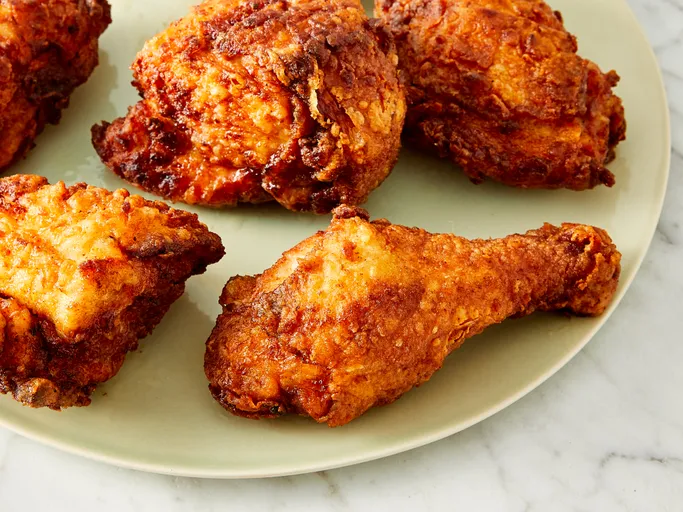

Crispy Fried Chicken

Description
There are a few reasons this crispy fried chicken works so well.Allowing the buttermilk-flour mixture to come to a paste-like consistency is key to a crispiness on the outside and juiciness on the inside.Most fried chicken is cooked at a high temperature throughout the frying process. This one, however, only starts at a very high heat — after browning, the heat is reduced for about 30 minutes. You'll turn up the temperature again at the end, locking in that crispy texture.Paprika adds smoky flavor and has a low smoke point, which helps with browning the chicken.
Ingredients
- 1 (4 pound) chicken, cut into pieces
- 1 cup buttermilk
- 2 cups all-purpose flour for coating
- 1 teaspoon paprika
- salt and ground black pepper to taste
- 2 quarts vegetable oil for frying
Steps
- Skin cut up chicken pieces if you prefer.
- Place flour in a large plastic bag (let the amount of chicken you are cooking dictate the amount of flour you use). Season flour with paprika (which helps to brown the chicken), salt, and black pepper.
- Place coated chicken on a baking sheet or tray; cover with a clean dish towel or waxed paper. LET SIT UNTIL THE FLOUR IS A PASTE-LIKE CONSISTENCY. THIS IS CRUCIAL!
- Fill a large skillet (cast iron is best) about ⅓ to ½ full with vegetable oil. Heat until VERY hot.
- Carefully lower as many chicken pieces into the skillet as it can hold. Fry in HOT oil on both sides until brown.
- When browned, reduce heat and cover skillet; cook for 30 minutes (the chicken will be cooked through but not crispy). Remove cover, raise heat again, and continue frying until crispy.
- Drain fried chicken on paper towels. Depending on how much chicken you have, you may have to fry in a few batches. Keep the finished chicken in a slightly warm oven while frying the rest.